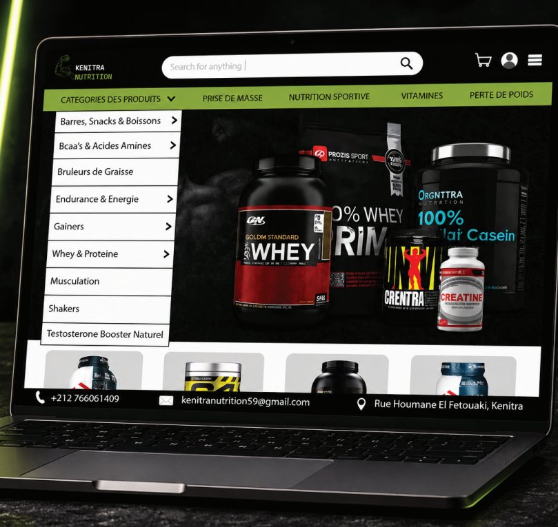
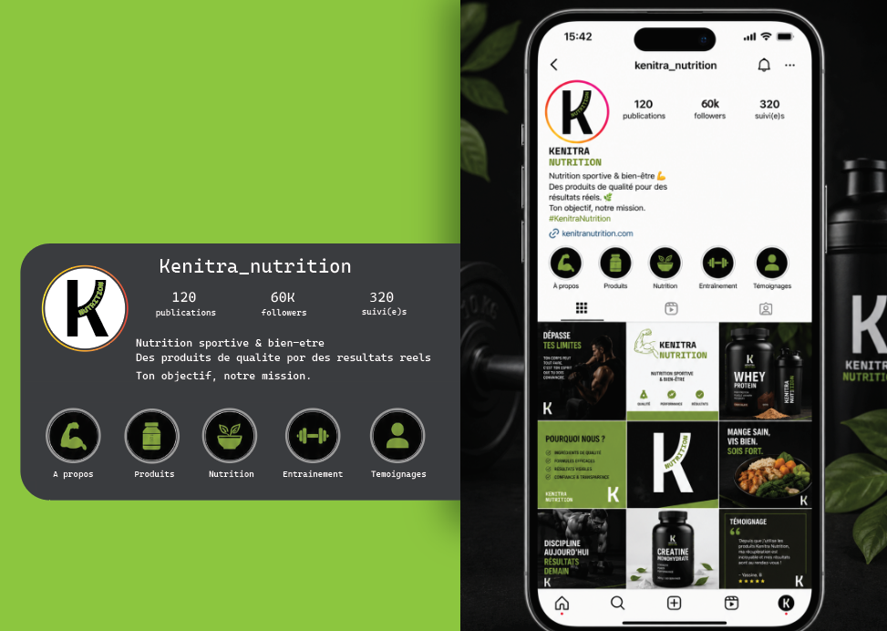

Kenitra Nutrition
The branding of Kenitra Nutrition captures energy, strength, and modern fitness culture through a bold black-and-green palette and dynamic logo variations. The muscular arm icon and strong typography emphasize vitality and performance, while the vertical “K” mark introduces a sleek, versatile identity. Applied across apparel, accessories, stationery, and digital platforms, the design system ensures consistency and impact, positioning the brand as both aspirational and accessible. This cohesive approach demonstrates how visual identity can empower a nutrition and fitness brand to connect with its community through clarity, motivation, and style.

